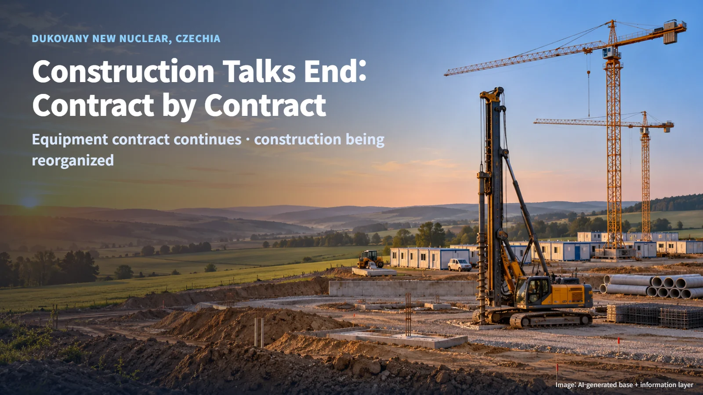
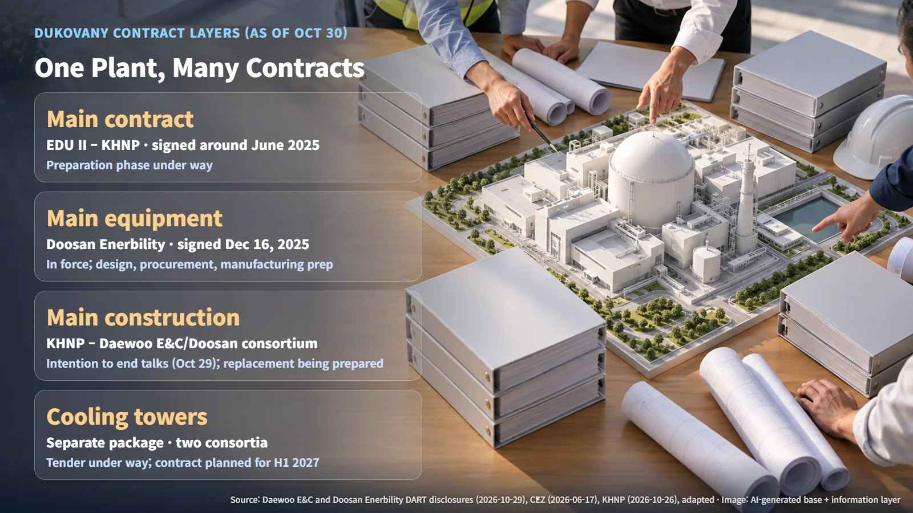
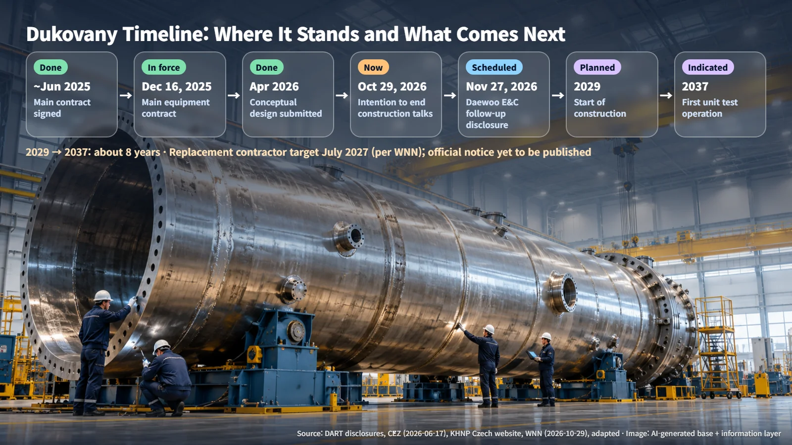

Czech Republic · New Build Contracts
Dukovany Construction Talks End: Contract by Contract, What Continues and What Is Being Redrawn
KHNP is ending construction talks with its Dukovany consortium, while Doosan Enerbility's reactor and turbine-generator supply contract remains in force.
When the news broke that construction contract talks for the Czech nuclear project had ended, many readers likely wondered whether the whole project was now in question. In our October 21 post, we covered the third meeting of the Dukovany implementation steering committee on October 20, which confirmed that the project had been progressing on schedule. That announcement records the situation before the talks ended on October 29. To see which part of the project has actually changed, it helps to take the contracts apart one at a time.

October 29: What the Two Companies Disclosed
In a regulatory disclosure on October 29, Daewoo E&C stated that it had confirmed Korea Hydro & Nuclear Power's (KHNP) intention to end negotiations on the construction contract. At the time of the disclosure, the company had yet to receive formal written notice, and it had told KHNP that it wished to continue talks. Doosan Enerbility disclosed on the same day that it had been verbally notified that the negotiations were ending.
Doosan explained that its supply contract for the reactor equipment and turbine-generator equipment, signed on December 16, 2025, remains in force without amendment or termination, and that design, procurement and manufacturing preparations are proceeding according to the planned procedures. From the signing date to October 29, that works out to roughly ten and a half months of equipment preparation already under way. What is being redrawn now is the question of who builds the plant on site; manufacturing the reactor and turbine continues under the existing contract.
According to WNN, the differences between the parties extended beyond construction cost to the scope of work, baseline quantities, the contract structure, and how the terms of the main contract would be reflected. The negotiation minutes, price proposals and the termination notice itself have not been made public. Which side's position was better founded can be assessed once those documents are released.
One Power Plant, Many Contracts
A nuclear project is built from several layers of contracts. It resembles building a house: the owner signs one large agreement with a general contractor, who then signs separate contracts with the boiler supplier and the framing crew. The top layer, the main contract, is the two-unit construction contract signed around June 2025 between the project company Elektrárna Dukovany II (EDU II) and KHNP. Since May 2025, EDU II has been owned 80% by the Czech Ministry of Finance and 20% by ČEZ.
| Contract layer | Parties | Status as of October 30 | |---|---|---| | Main contract | EDU II–KHNP | Signed; preparatory phase under way | | Main equipment supply | Doosan Enerbility | Remains in force without amendment or termination | | Main plant construction | KHNP–Daewoo E&C/Doosan consortium | Intention to end talks; preparing to select a replacement | | Cooling towers | KHNP–bidding consortia | Tender under way; contract planned for H1 2027 |
(Source: compiled from Daewoo E&C and Doosan Enerbility DART disclosures, ČEZ and KHNP announcements)
The cooling towers form a separate package. KHNP launched a tender for hybrid cooling towers on October 26, and two consortia, MVM EGI–Metrostav and JC Hamon–Hochtief, are taking part in a restricted competition. Hybrid towers combine dry and wet cooling to reduce raw water use. Because the project is divided into layers like this, when negotiations on one layer change, the other layers keep moving along their own schedules.

As the Design Matures, the Quantities Change
In April 2026, KHNP submitted a conceptual design that adapts the standard APR1000 to Czech law, the characteristics of the site and the owner's requirements; this document becomes the basis for detailed design. On site, geological surveys are gathering the data needed for foundation design, and there are plans to build a detailed 3D model of the site. As the design sharpens from a pencil sketch into construction drawings, the quantities of work and the construction methods become concrete.
According to WNN, KHNP proposed a lump-sum contract based on quantities from the basic design, while the construction side sought to have changes in quantities at the detailed design stage reflected in the price. As a general principle, a lump-sum contract places more of the risk of growing quantities on the contractor, while a contract that reflects quantity changes places more of it on the owner. Judging which approach fits this case requires comparing the versions of the design and ground data used in each estimate against the history of approved design changes. Any additional construction cost, and who bears it, can be assessed once approved change and estimate documents are available.
Next Checkpoints: The November 27 Follow-up Disclosure and the Re-tender Notice
Daewoo E&C said it would file a follow-up disclosure once matters are settled or within one month, and named November 27 as the scheduled date. Counting from October 29, that is about 29 days. According to WNN, KHNP is aiming to select a replacement construction contractor by July 2027. An official notice for the re-selection, the qualification requirements and the selection date have yet to be published.
ČEZ plans to start construction in 2029 after a preparatory phase of about four years, and KHNP's Czech website gives 2037 for trial operation of the first unit. 2037 − 2029 works out to about eight years. In a project schedule, the chain of tasks with no slack between them is called the critical path; a delay on that chain passes straight through to everything that follows. The key questions are whether design handover, the interfaces for equipment installation, site labor and logistics, and the scope of local supplier contracts sit on that chain. The actual impact will be confirmed through a revised schedule and approved documents.

The EU Industrial Accelerator Act, discussed at the October 20 meeting, is at the discussion stage and is being treated as a policy factor separate from these negotiations. The two countries plan to hold the fourth meeting in Korea within the year.
Broken down by contract layer, even a one-line headline about "talks ending" separates clearly into work that continues and work that is being redrawn. When reading nuclear news, asking first "which contract is this about?" gives a much more accurate sense of how much a development really weighs.